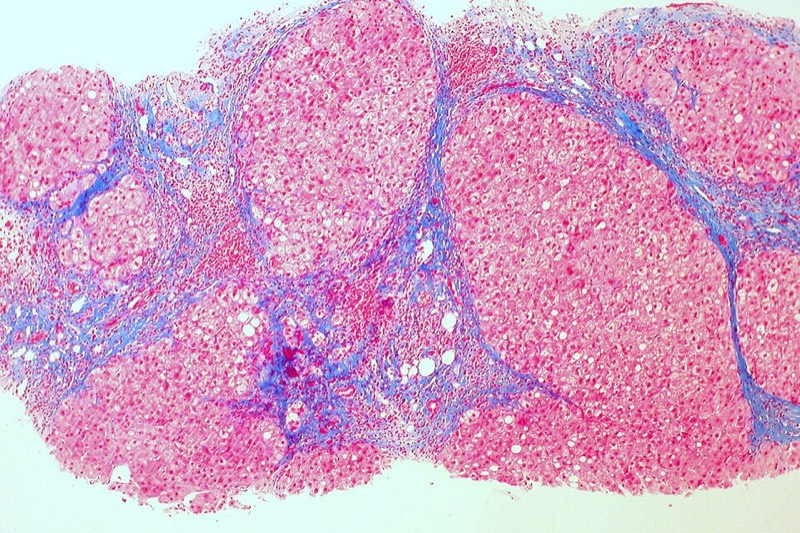
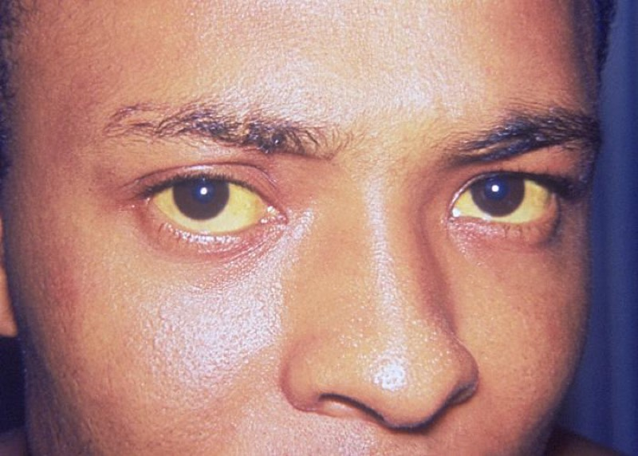

肝硬化與門脈高壓（含腹水、SBP、靜脈曲張、肝性腦病）
一個機轉（內臟血管擴張）串起全部併發症，是二階最會出「下一步處置」的章節
近五年 36 題（一階 5／二階 31）
肝纖維化 + 星狀細胞收縮
肝內阻力上升
門脈壓上升 HVPG
肝細胞功能下降
側支循環開啟
內臟血管擴張
NO 等血管擴張物質
白蛋白低 → 膠體滲透壓下降 助長腹水
凝血因子不足 → INR 上升
膽紅素上升 → 黃疸
免疫功能下降 + 腸道菌移位 → SBP
食道胃靜脈曲張 → 出血
氨繞過肝臟 → 肝性腦病
有效動脈血容積下降
肺內血管擴張 → 肝肺症候群
RAAS 與交感神經活化
ADH 上升
鈉水滯留 → 腹水
稀釋性低血鈉
腎血管收縮 → 肝腎症候群
肝星狀細胞（Ito cell）
位於 Disse 腔，儲存維生素 A
→ 二階：活化後是纖維化與動態阻力的元凶
Disse 腔與竇狀隙內皮窗孔
有窗孔、無基底膜，利於物質交換
→ 二階：微血管化後交換受阻，解釋合成功能下降
庫佛氏細胞
肝內巨噬細胞
→ 二階：清除腸道來源內毒素，功能下降 → 感染
門脈系統與體循環吻合處
食道下段、直腸、臍周、後腹膜
→ 二階：靜脈曲張、痔、海蛇頭的解剖基礎
尿素循環在肝細胞
氨 → 尿素
→ 二階：側支循環讓氨繞過 → 肝性腦病
白蛋白與膠體滲透壓
肝合成、半衰期約 20 天
→ 二階：腹水形成與白蛋白輸注的理由
RAAS 生理
腎素—血管收縮素—醛固酮
→ 二階：解釋 spironolactone 為第一線
星狀細胞儲存維生素 A、活化後分泌膠原
機轉：纖維化與動態阻力
二階：肝硬化病理特徵題
決策：抗纖維化與病因移除
竇狀隙內皮窗孔
機轉：微血管化 → 交換障礙
二階：合成功能下降
決策：白蛋白與凝血異常判讀
門—體循環吻合部位
機轉：側支開啟
二階：食道靜脈曲張、痔、海蛇頭
決策：內視鏡篩檢與結紮
RAAS 與醛固酮生理
機轉：鈉水滯留
二階：腹水形成
決策：spironolactone 為第一線
ADH 與自由水
機轉：稀釋性低血鈉
二階：低血鈉處置
決策：限水而非補鈉
尿素循環在肝
機轉：氨無法代謝
二階：肝性腦病
決策：lactulose、rifaximin、不限蛋白
前列腺素維持腎灌流
機轉：NSAID 阻斷
二階：腎功能惡化
決策：肝硬化避免 NSAID
NO 的血管作用
機轉：肝內不足、內臟過多
二階：門脈高壓雙重機轉
決策：NSBB 降心輸出與內臟血流
臨床表現
代償期可完全無症狀，靠檢驗與影像發現。
肝功能不足：黃疸、蜘蛛痣、手掌紅斑、男性女乳、睪丸萎縮（雌激素代謝下降）、
門脈高壓：脾腫大與血小板下降、腹水（shifting dullness、fluid wave）、海蛇頭、靜脈曲張。
撲翼樣震顫（asterixis）、肝臭（fetor hepaticus）。
血小板低是最早出現的線索之一（脾臟隔離＋TPO 生成下降）。
疑似肝硬化
抽血 + 超音波 + 非侵入性纖維化
是否 cACLD
確立 進入併發症評估
排除 CSPH 可暫免內視鏡
內視鏡篩檢靜脈曲張
有無腹水
有無意識改變
有無中大型曲張或紅色徵象
診斷性腹腔穿刺
SAAG + PMN + 培養
找誘因：感染 出血 電解質 藥物 便秘
lactulose ± rifaximin
NSBB（carvedilol 優先）或結紮
定期追蹤
PMN ≥250
診斷 SBP
第三代 cephalosporin + 白蛋白
限鈉 + spironolactone ± furosemide
心因性腹水
SAAG ≥1.1 但腹水總蛋白 ≥2.5、頸靜脈怒張、BNP 高
蛋白高的門脈高壓腹水 → 看心臟
腹膜癌症轉移
SAAG <1.1、細胞學陽性
低 SAAG 先想腫瘤與結核
腹膜結核
SAAG <1.1、腺苷去胺酶(ADA)升高、淋巴球為主
慢性發燒＋淋巴球腹水
續發性腹膜炎
多菌種、葡萄糖<50、LDH>血清
見比較表 10
非肝硬化門脈高壓
肝功能正常但有靜脈曲張
想血吸蟲、門靜脈栓塞
11.1 腹水
限鈉（約 2 g 鈉／日）；不常規限水，除非血鈉 <125 mEq/L。
利尿劑：spironolactone 為主，必要時加 furosemide（100:40 比例遞增）。
大量腹水穿刺（LVP）＋白蛋白（每抽 1 L 補 6–8 g）。
難治性腹水：反覆 LVP、TIPS（注意會惡化肝性腦病）、移植評估。
避免 NSAID（抑制前列腺素 → 腎灌流下降）與 ACEI/ARB（降血壓惡化循環）。
11.2 自發性細菌性腹膜炎（SBP）
診斷：腹水 PMN ≥250/mm³；床邊直接注入血液培養瓶提高陽性率；
治療：第三代 cephalosporin（如 cefotaxime）5–7 天。
白蛋白：Cr >1 mg/dL、BUN >30 或膽紅素 >4 時，第 1 天 1.5 g/kg、第 3 天 1 g/kg —
次級預防：曾發生 SBP 者長期口服 norfloxacin 或 co-trimoxazole。
初級預防：腹水總蛋白低＋進展期肝病、或消化道出血當下（ceftriaxone 7 天）。
11.3 靜脈曲張
陷阱：輸血輸太多會使門脈壓回升而再出血 → 限制性輸血策略。 > 114-2 醫學五 Q32、113-2 醫學三 Q22、112-2 醫學三 Q20 都在這一區出題。
11.4 肝性腦病
找誘因：感染、消化道出血、電解質異常（低血鉀、鹼中毒）、便秘、脫水、鎮靜劑、TIPS 後。
Lactulose：酸化腸道、把 NH₃ 轉成不吸收的 NH₄⁺，目標每天 2–3 次軟便。
Rifaximin：減少復發，常與 lactulose 併用。
不要限制蛋白質：舊觀念已被推翻，肌少症會惡化腦病；建議每日 1.2–1.5 g/kg 蛋白質，
反覆發作且藥物無效者評估移植；TIPS 後嚴重腦病可考慮縮小分流。
11.5 肝腎症候群（HRS-AKI）
診斷需排除低血容量、腎毒性藥物、休克、結構性腎病；停利尿劑並以白蛋白擴容 2 天無效。
治療：terlipressin ＋ 白蛋白（或 norepinephrine），根治仍是肝移植。
11.6 移植
適應症：失代償性肝硬化、符合米蘭準則的 HCC、急性肝衰竭、代謝性肝病。
禁忌：控制不良的肝外惡性腫瘤、嚴重心肺共病、無法控制的敗血症、持續物質濫用等
預後
代償期中位存活 >12 年；出現腹水後約 2 年；SBP 一年死亡率仍高。
預後不良指標：難治性腹水、低血鈉、HRS、反覆腦病、MELD 上升。
移除病因會逆轉：C 肝根治、B 肝抑制、戒酒、減重都能讓部分纖維化回退 —
流行病學
台灣主因長期是 B 型與 C 型肝炎；C 肝在直接抗病毒藥物（DAA）普及後新發個案下降，
肝硬化與肝癌長年位居台灣主要死因之列，男性明顯多於女性。
失代償一旦發生，中位存活由代償期的十年以上驟降至約兩年 — 這是為何「代償 vs 失代償」
白蛋白↓、INR↑、膽紅素↑
合成與排泄功能
INR 上升不等於不會血栓，肝硬化是「再平衡凝血」
血小板↓
門脈高壓間接指標
<150 K 合併脾腫大高度懷疑
AST/ALT
損傷程度
肝硬化末期可能反而正常
AST/ALT >2
酒精性肝病
需搭配 GGT 與病史
血氨
肝性腦病輔助
不能用來診斷或追蹤，與嚴重度相關性差
腹水 PMN ≥250/mm³
SBP 診斷
培養陰性也算（culture-negative neutrocytic ascites）
SAAG
≥1.1 → 門脈高壓性
比舊的滲出／漏出液分類準確
腹水總蛋白
肝硬化通常 <2.5
≥2.5 且 SAAG ≥1.1 → 想心因性（114-2 醫學三 Q22、112-1 醫學二 Q81 的方向）
非侵入性纖維化
彈性造影 LSM、FIB-4
Baveno VII 的 rule of five
影像與內視鏡
超音波：肝表面結節狀、肝右葉萎縮／尾葉肥大、脾腫大、門靜脈變寬、側支循環、腹水。
都卜勒：門靜脈血流反向（hepatofugal）為進展指標。
內視鏡：靜脈曲張分級與紅色徵象（red wale marks）→ 決定是否預防性治療。
HVPG（肝靜脈壓力梯度）是黃金標準：
Child-Pugh
用途：肝功能儲備
族群：肝硬化
限制：主觀項目、無腎功能、天花板效應
陷阱：不含 creatinine、不含轉胺酶（114-1 醫學三 Q22、醫學五 Q34 連兩年考）
決策：手術風險、藥物選擇
MELD/MELD-Na/3.0
用途：三個月死亡率、移植排序
族群：末期肝病
限制：不含腹水與腦病
陷阱：誤以為含腹水
決策：MELD ≥15 移植有存活利益
HVPG
用途：門脈壓客觀量測
族群：竇內性為主
限制：侵入性；竇前性測不準
陷阱：誤以為所有門脈高壓都測得出
決策：≥10 CSPH、≥12 出血風險
West Haven
用途：肝性腦病分級
族群：—
限制：主觀
陷阱：Grade IV 無 asterixis
決策：決定住院與氣道保護
Baveno VII 準則
用途：非侵入性判定 CSPH
族群：cACLD
限制：需可靠的彈性造影
陷阱：把 rule of five 記反
決策：決定是否需內視鏡篩檢
Child-Pugh 五項；MELD 三項；兩者差別。
SBP 的 PMN 切點與白蛋白使用時機。
急性靜脈曲張出血必給抗生素。
肝性腦病不限制蛋白質。
血氨正常不能排除肝性腦病，血氨高也不必然是腦病。
低血鈉補鈉（錯，要限水）。
TIPS 解決腹水但惡化腦病。
竇前性門脈高壓肝功能可正常。
把 creatinine 或 AST 放進 Child-Pugh 選項；把「限制
蛋白質」寫成正確處置。
111-1 二階 醫學三 61
初發 SBP 的致病原與抗生素
→ 單一腸道革蘭氏陰性菌、第三代 cephalosporin
111-2 二階 醫學三 23
何種情況不適合肝移植
→ 肝外惡性腫瘤／無法控制的感染等
112-1 一階 醫學二 81
何種腹水蛋白濃度最高
→ 非門脈高壓性（如腫瘤、結核）或心因性
112-1 二階 醫學三 18
黃疸＋腹脹＋反彈痛
→ 腹膜炎的判斷與處置
112-2 二階 醫學三 20
食道靜脈瘤出血處置何者錯誤
→ 輸血過度、延遲抗生素等為錯誤
113-1 二階 醫學三 23
腹水＋低血鈉＋低白蛋白的處置
→ 限水與利尿劑策略
113-2 二階 醫學三 22
胃食道靜脈曲張處理
→ NSBB／結紮／組織膠的適應症
114-1 二階 醫學三 22
Child-Turcotte-Pugh 未包含何者
→ creatinine（或轉胺酶）
114-1 二階 醫學五 31
門靜脈高壓敘述何者錯誤
→ 機轉與分類的細節
114-1 二階 醫學五 34
Child-Pugh 不是評估項目者
→ 同上
114-2 二階 醫學三 22
何種腹水數值最像肝硬化
→ 高 SAAG、低總蛋白
114-2 二階 醫學五 3
何者不是肝移植適應症
→ 禁忌症判斷
114-2 二階 醫學五 32
食道靜脈曲張出血處置何者錯誤
→ 見治療表
115-1 二階 醫學五 11
何者屬竇前性門脈高壓
→ 血吸蟲、門靜脈栓塞等
115-2 二階 醫學三 17
肝硬化血流改變因何種細胞活化
→ 肝星狀細胞
115-2 二階 醫學三 18
肝性腦病治療何者正確
→ 不限蛋白質、lactulose 與 rifaximin

肝硬化 trichrome 染色：藍色纖維間隔包繞再生結節。纖維化把肝竇隔開 → 肝內阻力上升 → 門脈高壓

CC BY 2.0／Ed Uthman from Houston, TX, USA

鞏膜黃染：總膽紅素約 2–3 mg/dL 以上才看得出來，鞏膜比皮膚更早顯現

Public domain／Unknown authorUnknown author
腹膜轉移造成的腹水（星號處）與腹膜增厚：屬低 SAAG（<1.1）腹水，機轉與肝硬化的高 SAAG 腹水完全不同

CC BY 4.0／Subhaschandra Singh, Y. Sobita Devi, Shweta Bhalothia and Dr. Veeraraghavan Gunasekaran
肝星狀細胞組織圖
Histology 教學資源／自繪示意圖
自製
Baveno VII 落地
以非侵入性檢查（LSM＋血小板）取代部分內視鏡篩檢；carvedilol 成為優先 NSBB
「誰需要做內視鏡」的答案已改變
代償期預防失代償
NSBB 用於 CSPH 者可降低失代償（PREDESCI 概念延伸）
NSBB 的適應症由「防出血」擴大到「防失代償」
Terlipressin 於 HRS
美國 2022 年核准；需注意呼吸衰竭風險與病人篩選
HRS 首選藥物的定位
長期白蛋白治療
ANSWER 等研究支持部分族群長期輸注，但各國指引採用程度不一
屬「有爭議」題材，考題多問機轉而非常規
MASLD／MetALD 新命名
2023 年更名，強調代謝與酒精共存的族群
115-2 醫學三 Q57 已直接考命名
纖維化可逆
病因移除後纖維化回退的證據累積
「肝硬化一定不可逆」成為錯誤敘述
人工智慧輔助內視鏡與影像
靜脈曲張與腹水偵測輔助
目前少入題，但屬趨勢題材
進場
誰會來、誰是高風險
分流
穩不穩、有沒有警訊
一線資料
先開哪些檢驗與影像
鑑別
可能是什麼、怎麼分
確診
什麼證據才算數
分級
多嚴重、哪一期
處置
依分級做什麼
追蹤預後
之後追什麼